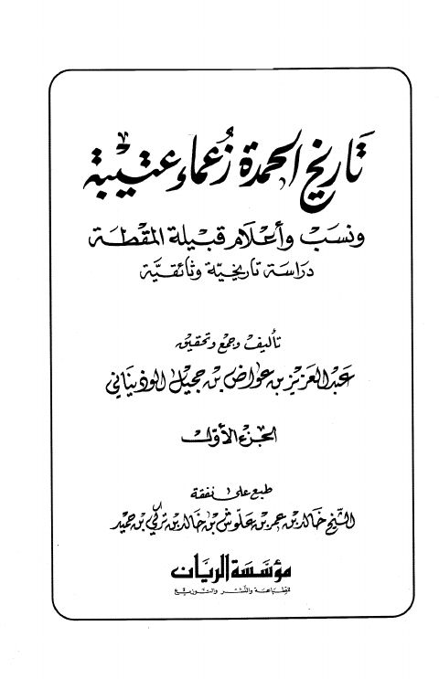

Downloads need an internet connection.
تاريخ الحمدة زعماء عتيبة ونسب وأعلام قبيلة المقطة دراسة تاريخية وثائقية
Authors: عبد العزيز بن عواض بن حجيل الوذيناني
Publishers: مؤسسة الريان
**▫️ العنوان: تاريخ الحمدة زعماء عتيبة ونسب وأعلام قبيلة المقطة دراسة تاريخية وثائقية** ▪️ المؤلف: #عبد_العزيز_بن_عواض_بن_حجيل_الوذيناني ▫️ الناشر: #مؤسسة_الريان ▪️ تاريخ النشر: 1429هـ 2008م ▫️ بلد النشر: بيروت، #لبنان ▪️ الطبعة: 1 ▫️ عدد الأجزاء: 2 ▪️ الصفحات: 1490 ▫️ نوع الوعاء: #كتاب ▪️ التصنيف الرئيسي: #تاريخ ۪